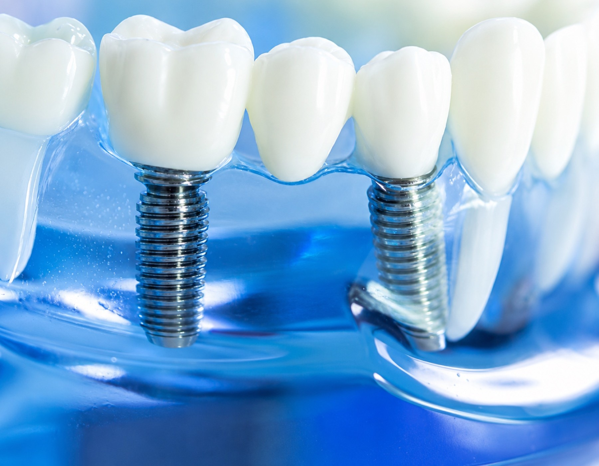

Your Go-To Guide for Dental Implants: Smile Brighter in Aventura, FL

Table of Contents
- How Dental Implants Can Transform Your Smile
- Why Dental Implants Are a Top Choice
- Trends in Implant Dentistry
- Am I a Good Candidate for Dental Implants?
- The Implant Process: What to Expect
- Comparing Implants to Other Options
- Recovery, Maintenance, and Lasting Success
- Real-Life Benefits: Smile, Eat, and Chat with Ease
- FAQs About Dental Implants
- Why Personalized Planning Matters Most
- Final Thoughts: A Healthier Smile Can Mean More Than You Think
How Dental Implants Can Transform Your Smile
They Replace the Whole Tooth
A dental implant is more than just a cosmetic fix. It's typically made up of a titanium or zirconia post that goes into your jaw, an abutment, and a custom restoration like a crown. Because it replaces the tooth root along with the visible part, it offers stability that removable options often can't match. This makes it one of the best ways to bring back your chewing strength and natural smile.
They Help Keep Your Jaw and Face in Shape
Lose a tooth, and the bone around it starts to shrink because it misses the stimulation from chewing. Dental implants help prevent this bone loss by acting like a natural root. This is important not just for oral health but also for keeping your facial shape intact. If you need extra support, treatments like full mouth reconstruction or tooth extraction might be part of your treatment plan before implant placement.
They Boost Your Day-to-Day Confidence
Many people feel the emotional impact of missing teeth before they even think about the functional side. They might avoid smiling in photos, cover their mouths when talking, or choose softer foods over what they love. Dental implants can change all that by providing a secure and predictable solution. The confidence boost often becomes just as meaningful as the physical repair.
Why Dental Implants Are a Top Choice
They Look and Feel Real
One of the main reasons people pick implants is their realistic look. A well-designed implant restoration is customized to match your other teeth in color, shape, and size. Once healed, many people say the implant feels like a natural part of their mouth rather than an artificial replacement. That natural feel helps you speak, laugh, and chew without feeling self-conscious.
They Last a Long Time
With good oral hygiene and regular professional care, dental implants can last many years—often decades. While the crown or bridge might need replacing eventually, the implant post itself is built to last. This durability is why implants are often seen as an investment in both health and quality of life. For those focusing on preventive care, regular dental cleanings and exams can help protect the tissues around the implant.
They Support Normal Eating and Talking
Loose dentures might shift when you talk or eat, making everyday activities frustrating. Implants provide a stable anchor that helps restore your biting strength and speech clarity. This not only expands your food choices but also makes social situations less stressful. For many, this practical freedom is just as important as looking good.
Trends in Implant Dentistry
AI is Making Planning Better
Artificial intelligence is changing how dentists plan implant placement. AI-driven software can analyze scans, map anatomy, and help determine the best position for each implant, reducing errors and improving efficiency. Digital planning doesn’t replace professional judgment, but it adds another layer of insight that supports safer, more predictable treatment.
If you're curious about digital health innovation, the U.S. Food and Drug Administration’s digital health resources offer useful info on technology in healthcare. In dentistry, accuracy, workflow, and patient safety are helping shape smarter implant care.
Digital Workflows Make Treatment Smoother
Modern implant dentistry often involves computer-aided design, guided surgery, and 3D printing. These tools help create surgical guides, temporary restorations, and final prosthetics more efficiently. This can lead to faster, more coordinated treatments with fewer surprises. Digital dentistry also makes it easier to tailor treatment to your specific anatomy and goals.
When digital planning is paired with services like dental crowns and bridges, the final restoration can be both functional and highly aesthetic. This is especially valuable when multiple teeth are involved or when the bite needs careful balance.
New Materials Improve Longevity
Titanium is still the most used implant material, but zirconia implants and advanced surface treatments are gaining attention. These innovations aim to improve integration with the bone, reduce complications, and support long-term success. According to Grand View Research, the implant market is growing partly due to better materials and tech, along with increasing patient demand for durable tooth replacement.
Am I a Good Candidate for Dental Implants?
Bone Health is Key
Successful implant treatment depends on having enough healthy bone to support the post. If bone density is low, you might talk with your dentist about grafting or alternative treatment sequences. This usually starts with a thorough exam and imaging, often including CBCT scans. In some cases, patients who thought implants were impossible find that they can proceed after some preparatory care.
Oral and Overall Health Matter
Healthy gums, controlled chronic conditions, and consistent home care all support implant success. Smoking, uncontrolled diabetes, and untreated gum disease can increase risk and should be discussed openly with your dental team. A careful consultation helps match the treatment plan to your overall health. If there's infection or severe decay, treatments like root canal therapy or periodontal care may be recommended first.
Age Isn't as Important as Readiness
There’s no age limit for being a good implant candidate. What matters more is bone support, oral hygiene, and your ability to heal. Many adults in their 40s, 50s, 60s, and beyond choose implants because they want a stable, long-term solution. The key is a personalized evaluation rather than a one-size-fits-all approach.
The Implant Process: What to Expect
Consultation and Planning
It all starts with an exam, imaging, and a chat about your goals. Your dentist will check the area of the missing tooth, look at the surrounding teeth and gums, and decide if implant placement is straightforward or if preliminary treatment is needed. This is also the time to ask about timing, materials, sedation options, and costs.
Placement and Healing
During surgery, the implant post goes into the jawbone. After that, the site goes through a healing phase called osseointegration, where the bone bonds with the implant. This can take several months, depending on your healing response and the case's complexity. Some people might get a temporary restoration while waiting for the final crown or bridge.
Final Restoration
Once healing is complete, the abutment and custom restoration are attached. This final step brings function and aesthetics together. The restoration is shaped and shaded to match your smile, and your bite is adjusted for comfort. If full-arch treatment is needed, something like All-on-4 implants can offer a complete smile makeover with fewer implant posts.
Comparing Implants to Other Options
Versus Dentures
Dentures can work well, especially for those looking for a removable solution. However, they might slip, need adhesives, and don’t replace the tooth root. Implant-supported dentures are more stable and can improve comfort, chewing efficiency, and confidence. For those seeking a more secure option, the difference can be significant.
Versus Bridges
Dental bridges are another common way to replace teeth and can be effective in some cases. The downside is that they rely on neighboring teeth for support, meaning healthy tooth structure might need altering. Implants avoid putting this burden on other teeth. In some situations, bridges and implants can even be combined in a broader restorative plan.
Versus Leaving the Gap
Leaving a missing tooth untreated can lead to teeth shifting, bite changes, gum issues, and jawbone loss. It may also make future treatment more complex. For many, waiting comes with both financial and functional costs. Replacing the tooth early often results in better long-term outcomes and fewer complications.
Recovery, Maintenance, and Lasting Success
What to Expect After Surgery
Recovery after implant placement might involve mild swelling, tenderness, and temporary dietary changes. Your dentist will provide instructions on brushing, rinsing, and foods to avoid during healing. While the process is manageable for most, patience is key as the bone needs time to bond with the implant. Following instructions closely can make recovery smoother and lower the risk.
Daily Care Counts
Though implants don’t get cavities, the gums and bone around them can still get inflamed or infected. Brushing, flossing, and professional maintenance remain essential. Patients who keep up with dental checkups and cleanings give their implants the best chance of lasting for decades. Good hygiene also helps protect the rest of the mouth, supporting overall treatment success.
Regular Follow-ups
Routine visits let your dental team check bite alignment, gum health, and restoration fit. Small adjustments made early can prevent bigger problems later. This is why implants work best as a partnership between you and your provider. If you’re managing cosmetic goals alongside restorative care, a smile makeover plan can help coordinate your priorities.
Real-Life Benefits: Smile, Eat, and Chat with Ease
A Patient Who Stopped Hiding in Photos
Many implant patients share a similar story. Initially, they focus on replacing a missing tooth. Then, after treatment, they find themselves smiling more, speaking freely, and feeling less self-conscious. A restored smile can lift personal interactions, professional confidence, and overall self-image in unexpected ways.
A Patient Who Returned to Favorite Foods
Chewing comfort is another big perk. Those who avoided crunchy, chewy, or tough foods often find that implants restore much of their eating freedom. This change can make meals more enjoyable at home and in restaurants. In daily life, these small wins become some of the most meaningful outcomes of treatment.
A Patient Who Improved Long-Term Oral Health
Some start implant care after dealing with ongoing dental repairs, loose restorations, or denture issues. Once their new treatment plan is complete, they often feel they’ve moved from constant maintenance to a more stable foundation. For those rebuilding several teeth at once, implant care might be paired with full mouth reconstruction for a more complete result.
FAQs About Dental Implants
How Long Do Implants Last?
With proper care, dental implants can last 20 years or more, often much longer than other restorative options. Their longevity depends on oral hygiene, bone health, bite forces, and routine professional care. The restoration on top may need replacement eventually, but the implant itself is built to last.
Are Implants Painful?
Most patients are surprised to find that implant surgery is more manageable than expected. Local anesthesia and modern techniques help keep discomfort under control during treatment, and post-operative soreness is usually handled with medication and home care instructions. The healing phase requires patience, but many find the process easier than they thought.
Do Implants Always Require Bone Grafting?
Not always. Bone grafting is only necessary when the jaw lacks volume or density to support a stable implant. Your dentist will determine if grafting is needed based on imaging and clinical findings. In many cases, patients can go straight to implant treatment without it.
What if I’m Missing Several Teeth?
Missing multiple teeth doesn’t automatically rule out implants. Depending on your needs, you might be a candidate for a few strategically placed implants, an implant bridge, or a full-arch option like dentures and partial dentures supported by implants. The right plan depends on the number of missing teeth, bone condition, and your goals for comfort and appearance.
Why Personalized Planning Matters Most
Every Smile is Unique
Successful implant treatment isn’t just about putting hardware into bone. It’s about creating a restoration that fits your bite, matches your face, and supports your daily life. A personalized approach considers gum shape, bone support, neighboring teeth, and your long-term expectations. This attention to detail helps the final result look natural.
Technology Supports Judgment
AI, digital scanning, and 3D planning are powerful tools, but they work best when guided by experienced professionals. The best results come from blending technology with careful diagnosis and a discussion about your goals. Patients who ask questions and understand the sequence of care often feel more comfortable throughout treatment.
Local Access Makes a Difference
For those in Aventura and nearby areas, having local access to comprehensive care can make the process smoother from start to finish. Coordinating imaging, surgery, restorations, and follow-up visits in one practice reduces stress and keeps things consistent. Ready to take the next step? Explore our dental implants service or contact Aventura Dental Center to discuss your options.
Final Thoughts: A Healthier Smile Can Mean More Than You Think
Dental implants are one of the most effective ways to replace missing teeth because they support function, preserve bone, and look natural. Just as importantly, they help many people regain confidence in eating, speaking, and smiling. With modern planning tools, better materials, and personalized treatment strategies, implant dentistry is becoming more precise and patient-friendly.
If you’re dealing with a gap, struggling with loose dentures, or wondering if a more permanent solution is possible, now's a great time to learn more. A thoughtful consultation can help determine if implants are right for you and what treatment sequence will work best. To protect your long-term results, pair treatment with preventive care like dental cleanings and exams, and regular checkups.
Ready to restore your smile and confidence? Contact Aventura Dental Center today to schedule a consultation and discover a treatment plan designed around your health, goals, and lifestyle.